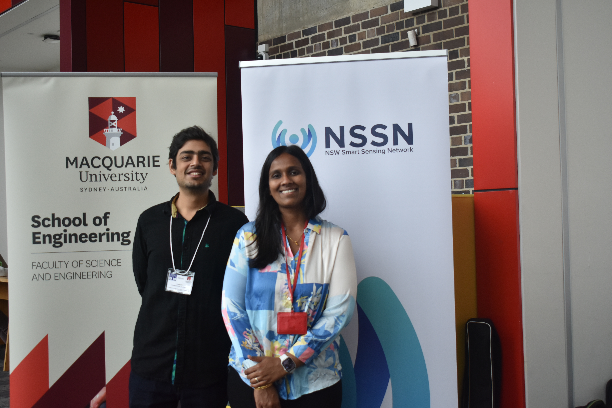
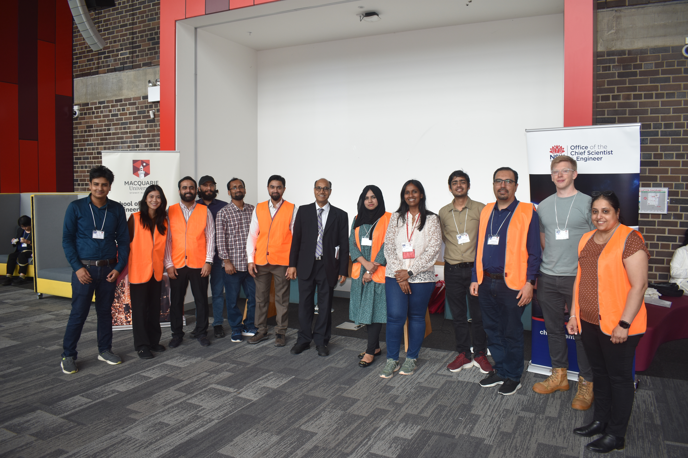
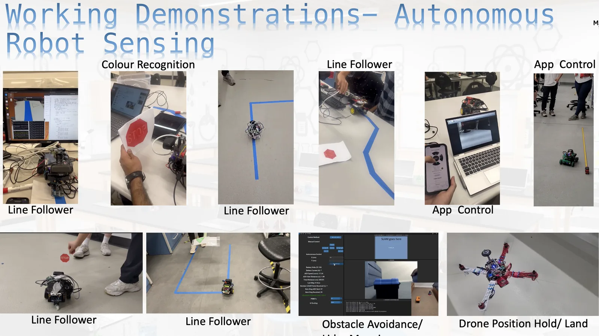
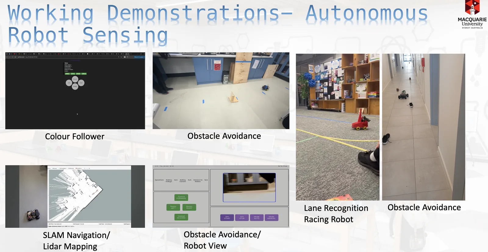
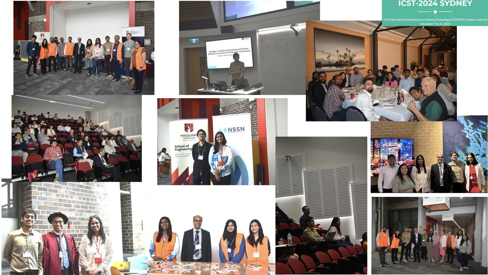

<!----------------------------------------------------------------
------------------------ Research Section -----------------------
----------------------------------------------------------------->
<section id="research" class="research">
  <div class="container">

    <div class="section-title">
      <h2></h2>
      <p>ICST 2024- Presenting Mecqabot</p>
    </div>

<hr>            
<h4> International Conference on Sensing Technology 2024- Presenting Mecqabot</h4>
<hr>


<div class="whole-wrap">
        <div class="container">
          <div class="section-top-border">
            <!-- <div class="research-item pb-0"> -->
              <div class="row">
                

<ol>
  <p> 
    We presented our paper at the <a href="https://icst.in/icst2024/" target="_blank"> ICST 2024 conference</a>. 
    You can explore in more detail <a href="https://github.com/AliceJames-1/MecQaBot" target="_blank">here</a>. 
    The conference brought together over 100 participants from leading organizations and universities, offering a fantastic opportunity for insightful discussions on IoT, mobile sensing, and emerging technologies. 
    It was an enriching experience, and we're excited to continue the conversations sparked during the event! 
  </p>


  
  </p>
    <br>
    
    
    
    
    

  </b>  
            
</ol>
</div></div></div></div>

 
    </section><!-- End Services Section -->
  
  
